Questão 1 · Radiológico · 4000185581Paciente de 60 anos de idade comparece ao serviço de urgência devido a quadro de um mês de evolução de fadiga, hiporexia, tosse seca e dispneia aos esforços progressiva, atualmente aos mínimos esforços. Em sua história patológica pregressa consta apenas transtorno depressivo maior em remissão com citalopram e tabagismo ativo, com 30 maços-ano. Ao exame físico, apresentava bom estado geral, mucosas úmidas e hipocoradas 1+/4+, ausência de linfadenomegalias, cavidade oral e nasal sem alterações, com frequência cardíaca de 98 batimentos por minuto, frequência respiratória de 24 incursões por minuto, temperatura axilar de 37,2 graus Celsius, saturação periférica de 86%, expansibilidade torácica reduzida à esquerda, com crepitações nas holoinspiratórias em base esquerda e em todo hemitórax direito, exames dos sistemas cardiovascular e abdominal sem alterações. Realizou radiogra a de tórax com o seguinte achado: Com relação ao quadro clínico descrito acima, assinale a alternativa CORRETA:
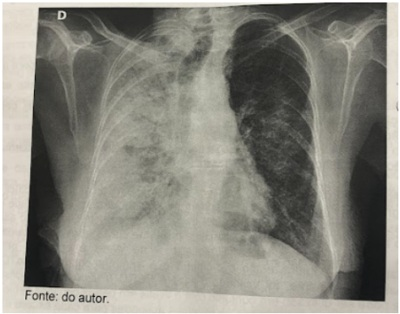
A A hipótese mais provável é de derrame pleural volumoso à direita, estando indicada toracocentese diagnóstica e terapêutica.
B A presença de broncogramas aéreos no pulmão direito é patognomônica de pneumonia bacteriana comunitária.
C Não existem achados radiográficos nessa imagem que sejam sugestivos de redução volumétrica do pulmão direito.
D É possível afirmar que as alterações predominantes sugerem preenchimento alveolar bilateral, mais acentuado à direita.
Questão 2 · Tabagismo · Pneumologia · 4000185228Recomenda-se que, pelo risco que oferece à saúde do indivíduo, o tabagismo passivo seja frequentemente indagado aos usuários dos serviços de saúde (tanto quanto o tabagismo ativo), incluindo também as crianças. Nesse sentido, pode constituir-se como importante estratégia de identi cação de fumantes e motivação destes para abandono do tabaco, sendo as principais consequências e efeitos de longo prazo do fumo passivo, o(a)
A diminuição do risco cardiovascular na idade adulta.
B aumento do risco em 90% de câncer de pulmão.
C aumento do risco em 50% de infarto do miocárdio.
D aumento do risco de câncer de seios da face.
E diminuição de bronquite crônica e enfisema pulmonar.
Questão 3 · Pneumologia · Rastreio populacional · 4000184461Um homem de 65 anos de idade procura um médico de família para exames de rotina. Está assintomático, tem história familiar de câncer de pulmão e é tabagista (15 maços-ano, atualmente 10 cigarros/dia). Solicita pedido de radiogra a de tórax, pois está preocupado com câncer de pulmão. Apresenta-se em fase de pré-contemplação no ciclo de DiClemente-Prochaska. Nesse caso, a conduta mais correta diante dessa solicitação é
A solicitar a radiografia de tórax, pois existe chance de câncer de pulmão.
B solicitar uma tomografia de baixa dosagem (TCBD), pois é mais efetiva que a radiografia de tórax.
C não solicitar radiografia de tórax: existe o risco do exame vir normal e ocorrer o efeito de “falsa segurança”.
D solicitar tomografia de tórax simples, sem contraste.
E solicitar uma TCBD, por haver indicação para esse rastreio e para não se romper um vínculo de cuidado.
Questão 4 · Estadiamento anatômico · 4000184363Homem, 58a, apresenta tosse e emagrecimento de 5Kg há dois meses. Radiograma de tórax: opacidade paracardíaca direita, com apagamento do bordo direito do coração e discreto alargamento do mediastino. Biopsia por broncoscopia: carcinoma não pequenas células.
A principal direito.
B intermediário.
C do lobo inferior direito.
D do lobo médio.
Questão 5 · Pneumologia · Neoplasia pulmonar · 4000183418Durante uma consulta ambulatorial de rotina de um paciente com 65 anos, você percebe essa alteração no exame físico. Se você pudesse solicitar apenas um exame para investigação, qual dos exames abaixo escolheria?

A Ecocardiograma
B Antígeno cárcino-embrionário
C Tomografia de tórax
D Endoscopia digestiva alta
E Gasometria arterial
Questão 6 · Manejo do nódulo abordagem diagnóstica · 4000181696Homem de 75 anos de idade retorna ao ambulatório por quadro de tosse há cerca de 3 semanas, com melhora parcial nos últimos dias. É hipertenso e tabagista de 60 anos-maço. A tomogra a de tórax revela nódulo periférico, sólido, de 1,2 cm de diâmetro, em lobo superior direito. Não mostra outras alterações. O paciente nega emagrecimento, febre, dor torácica ou hemoptise. Queixa-se apenas de tosse, que diz que até já melhorou um pouco. A melhor conduta para este paciente, dentre as abaixo, é:
A Toracoscopia com excisão do nódulo.
B Biópsia por broncoscopia.
C Seguimento com tomografia anual.
D Biópsia percutânea.
Questão 7 · Pneumologia · Neoplasia pulmonar · 4000181616Qual neoplasia maligna é responsável pelo maior número de óbitos no Brasil?
A Neoplasia de pulmão.
B Neoplasia de intestino.
C Neoplasia de mama.
D Neoplasia de pele.
E Neoplasia de colo de útero.
Questão 8 · Pneumologia · Tumor de Pancoast · 4000181589Um paciente com uma massa em ápice pulmonar direito apresenta dor e perda de força em ombro e braço direitos, além de ptose palpebral, miose e anidrose ipsilateral. A síndrome que inclui todos esses sinais e sintomas é denominada
A síndrome de Claude Bernard-Horner.
B síndrome da veia cava superior.
C síndrome de Kaposi.
D síndrome de Pancoast.
E síndrome do desfiladeiro torácico.
Questão 9 · Tipos histológicos · Neoplasia pulmonar · 4000186318O câncer de pulmão é o 3º responsável pelos óbitos de câncer em homens e o 4º em mulheres. Sobre esse tipo de câncer, assinale a afirmativa correta.
A Aproximadamente 20% dos casos estão associados ao consumo de bebida alcoólica.
B É o câncer de maior prevalência nos pacientes do sexo feminino.
C Os tipos histológicos mais comuns são os carcinomas de não pequenas células (que incluem adenocarcinoma de células escamosas e os carcinomas
D De acordo com o Tratado de Tumores Malignos (TNM), 8ª edição, o derrame pleural neoplásico passa a não ser mais considerado metástase.
Questão 10 · Pneumologia · Diagnóstico · 4000170986Mulher de 50 anos vem apresentando dor tipo pleurítica em base direita, modi cação do padrão de tosse e emagrecimento. A TC de tórax mostra nódulo solitário, espiculado, de 1,4cm, próximo da pleura. Nesse caso, o procedimento preferencial para o diagnóstico e o tipo de câncer de pulmão mais provável, respectivamente, são:
A biópsia transtorácica guiada por TC / carcinoma epidermoide
B biópsia transtorácica guiada por TC / adenocarcinoma
C broncoscopia / carcinoma epidermoide
D broncoscopia / adenocarcinoma
Questão 11 · Pneumologia · Síndrome de veia cava superior · 4000170563Um homem de 67 anos de idade, tabagista de longa data, com alta carga tabágica (86 anos/maço), compareceu à consulta ambulatorial, relatando dispneia progressiva aos esforços, associada à piora da tosse, que já possuía cronicamente. Relatou que sua esposa vinha notando seu rosto mais avermelhado ultimamente, além de leve assimetria em membro superior direito, que foi constatada em seu exame físico. Com base nesse caso hipotético, é correto a rmar que o diagnóstico mais provável é o de
A trombose de veia jugular.
B DPOC exacerbado.
C insuficiência cardíaca congestiva.
D síndrome da veia cava superior.
E síndrome da veia cava inferior.
Questão 12 · Pneumologia · Epidemiologia · Neoplasia pulmonar · 4000168976Dos tumores de pulmão, o que apresenta mais incidência em não fumantes é o
A câncer de pequenas células.
B teratoma
C carcinoma de células escamosas.
D adenocarcinoma.
E carcinoma de células grandes.
Questão 13 · Câncer de Pulmão · Pneumologia · 4000168773Homem de 68 anos queixa-se de dispneia e tosse há 10 dias. É tabagista desde os 20 anos e fuma um maço de cigarros ao dia. É operário em uma mineradora há 25 anos. Ao exame físico, a avaliação do tórax revela expansibilidade reduzida no hemitórax direito, observando-se no 1/3 superior ipsilateral: submacicez à percussão, frêmito toracovocal abolido e ausência de sons respiratórios na mesma região. Assinale a alternativa que apresenta a causa MAIS PROVÁVEL para os achados no exame físico e na radiografia do tórax desse paciente:
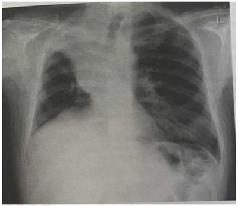
A Atelectasia do lobo médio
B Câncer de pulmão
C Pneumonia lobar
D Silicose pulmonar
Questão 14 · Radiológico · 4000167354Homem, 58a, procura atendimento médico com queixa de tosse e emagrecimento de 5 Kg há dois meses. Broncoscopia: lesão endoscopicamente visível e obstrutiva à direita. Radiograma do tórax: A LESÃO ENCONTRA-SE NO BRÔNQUIO:

A Principal.
B Intermediário.
C Lobo inferior.
D Lobo médio.
Questão 15 · Quadro clínico · Neoplasia pulmonar · 4000167338Homem, 50a, é trazido a serviço médico com história de cefaleia há uma semana e confusão mental há dois dias. Nega vômitos ou diarreia. Exame físico: PA= 128x84 mmHg, FC= 56 bpm; neurológico: confuso, sonolento. Ureia= 20 mg/dl_; creatinina= 0,8 mg/dL; sódio= 115 mEq/L; potássio= 3,6 mEq/L; Hb= 11 g/dL. Exame sumário de urina: sem alterações. Radiograma de tórax: A CAUSA MAIS PROVÁVEL DA HIPONATREMIA É:

A Insuficiência adrenal.
B Diabetes insipidus central.
C Nefrite intersticial crônica.
D Secreção inapropriada de ADH.
Questão 16 · Pneumologia · Rastreio populacional · 4000166357No rastreamento para o câncer de pulmão,
A um paciente de 65 anos e carga tabágica de 15 anos/maço deve se beneficiar do rastreamento com TC de tórax, de acordo com o resultado do NLST.
B a TC de tórax mostra-se superior à radiografia de tórax como método de rastreamento (diminuição da mortalidade por câncer de 20%).
C o uso da TC de tórax, quando comparada à radiografia, apresenta diminuição da mortalidade geral, porém sem impacto na mortalidade por câncer de pulmão para os pacientes de alto risco.
D há comprovação de que ela estimula o tabagismo, aumentando a mortalidade não relacionada a câncer.
Questão 17 · Tratamento · Pneumologia · 4000166236Mulher, 58 anos de idade, submeteu-se à ressecção de lesão cerebral que se revelou tratar de metástase de neoplasia pulmonar. Tomogra a de tórax: massa em lobo superior direito, espiculada, com dimensões de 4 x 3 cm. A biópsia da lesão revela um adenocarcinoma primário. O estadiamento do tumor não evidencia comprometimento dos linfonodos mediastinais e nem outros sítios de metástase. Qual é a melhor conduta?
A Não tem indicação cirúrgica; tratamento com quimioterapia e radioterapia.
B Lobectomia superior direita com esvaziamento mediastinal; tratamento adjuvante.
C Segmentectomia com esvaziamento mediastinal; tratamento adjuvante.
D Não tem indicação cirúrgica; tratamento com quimioterapia exclusiva.
Questão 18 · Diagnóstico · Estadiamento · 4000164258Mulher, 73 anos, tabagista 55 anos/maço, procura pneumologista com queixa de tosse e hemoptoicos há 4 semanas. Tomogra a de tórax mostra lesão espiculada periférica de 4,0 cm no lobo superior direito. PET-TC (tomogra a por emissão de pósitrons) apresenta lesão pulmonar com captação aumentada (SUV = 7) e em linfonodos mediastinais (SUV = 6) e hilares à direita (SUV = 4). A avaliação funcional pulmonar mostrou espirometria com VEF1 = 2,3L compatível com ressecção até bilobectomia. Qual o próximo passo mais adequado no manejo deste paciente?
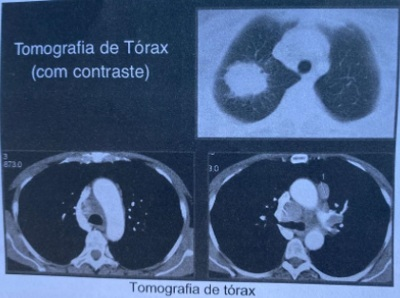
A Pneumonectomia direita e broncoplastia (margem de segurança).
B Preparo para cirurgia com intenção curativa com programação de segmentectomia apical direita e esvaziamento mediastinal.
C Realizar amostragem dos linfonodos mediastinais e hilares por EBUS (
D Encaminhar para avaliação oncológica clínica para protocolo de neoadjuvância.
Questão 19 · Pneumologia · Síndromes paraneoplásicas · 4000164039Homem de 72 anos, tabagista, é levado à emergência pela esposa, que refere quadro de uma semana de evolução de rebaixamento do nível de consciência, náuseas, vômitos e poliúria. Ao exame, encontra-se torporoso, hipotenso e taquicárdico. Os exames laboratoriais evidenciam cálcio sérico de 14,8mg/dL. Pela radiogra a de tórax, nota-se massa de cerca de 3,5cm, com contornos mal definidos, em lobo superior de pulmão esquerdo. O mecanismo siopatológico mais provavelmente implicado no distúrbio metabólico e a conduta inicial mais adequada para esse caso, respectivamente, são:
A secreção de PTHrp / hidratação venosa
B hiperparatireoidismo / diurético de alça
C metástases osteolíticas / bifosfonato
D secreção de calcitriol / calcitonina
Questão 20 · Pneumologia · Tumor de Pancoast · 4000146299Dentre os diferentes tipos histológicos de câncer de pulmão, existe um tumor de estreito torácico superior, cujo crescimento pode levar ao comprometimento de estruturas neurológicas adjacentes, causando uma síndrome característica, na qual ocorre bloqueio da inervação simpática do olho e da face. Qual é esse tipo de tumor descrito?
A Carcinoma de grandes células.
B Carcinoma espinocelular.
C Tumor de Pancoast.
D Carcinoma de pequenas células.
E Carcinoma bronquíolo-alveolar.
Questão 21 · Rastreamento · Indicações de rastreio da osteoporose · Rastreio Câncer Colorretal · 4000145949Um paciente de 71 anos de idade foi à consulta de rotina por insistência da esposa, sem qualquer problema de saúde ou queixas no momento. É tabagista há quarenta anos (um maço por dia) e sedentário. Nega uso de álcool ou de medicamentos contínuos, comorbidades, internações ou quedas nos últimos doze meses e cirurgias prévias. Encontra-se em bom estado geral, consciente, orientado, com PA de 116 x 74 mmHg, IMC igual a 23, FC de 76 bpm e sat. de O2 de 97% em ar ambiente. Pesa 67 kg e tem 1,69 m de altura. Foram observados duas bulhas rítmicas, normofonéticas, sem sopro, e murmúrios vesiculares bilaterais. Com base nesse caso hipotético e no US Task Force, assinale a alternativa que apresenta apenas exames com benefícios comprovados para o rastreamento do paciente.
A densitometria óssea e glicemia
B ultrassonografia de tireoide e colesterol total
C TSH e colonoscopia
D glicemia e radiografia de pulmão
E ultrassonografia de abdômen e tomografia de pulmão de baixa dosagem
Questão 22 · Punção transtorácica guiada por tomograf ia · 4000144229Homem, 67 anos, tabagista (70 anos-maço) e com tosse crônica. Radiogra a de tórax atual com nódulo pulmonar de 2,5 cm no lobo superior esquerdo. Queixa-se de aumento na intensidade da tosse e hemoptóicos. Broncoscopia foi normal com biópsia transbrônquica negativa e citologia do lavado broncoalveolar negativo para células neoplásicas (aguarda cultura para microbactérias e fungos). Seguindo o planejamento diagnóstico, qual a conduta mais adequada?
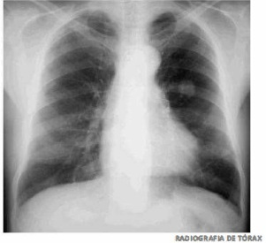
A Punção biópsia aspirativa do nódulo ou biópsia tecidual transtorácica, pois é necessário o diagnóstico definitivo.
B Aguardar as culturas finais para o bacilo da tuberculose, porém iniciar imediatamente esquema de tratamento específico.
C Toracotomia com lobectomia pulmonar pela possível malignidade do nódulo, evitando os riscos de implantes tumorais na tentativa de biópsia transtorácica.
D Iniciar prova terapêutica para tuberculose, pois os indícios clínicos são fortes bem como os achados radiológicos.
Questão 23 · Rastreio Câncer Colorretal · Escolha de testes diagnósticos para rastreamento · Rastreio populacional · 4000140590Homem de 68 anos de idade, aposentado, vem para consulta em ambulatório geral para avaliação de “check-up”. Tem hipotireoidismo há 10 anos, em uso de levotiroxina 50 mcg ao dia. É tabagista de 1 maço por dia, desde os 15 anos de idade. Quando indagado sobre parar de fumar, entende que o cigarro é a causa dos seus problemas e que gostaria de parar de fumar, mas não se sente preparado para tentar agora, pois ainda precisa dele para aliviar o estresse. No exame clínico, tem peso de 81 kg e altura 150 cm. Pressão arterial: 110 x 76 mmHg. O restante do exame clínico é normal. Traz exames realizados há 2 semanas: Hb: 17 g/Dl; Ht: 48%; Leucócitos: 8400/mm³; Plaquetas: 347 mil/mm³; Glicemia de jejum: 112 mg/dL; Hemoglobina glicada: 6,0%; Colesterol total: 128 mg/dL; LDL: 64 mg/dL HDL: 46 mg/dL; Creatinina: 0,8 mg/dL; Ureia: 35 mg/dL; Na: 140 mEq/L K: 3,9 mEq/L; TSH: 8,8 μU/mL; T4 livre normal. Segundo as recomendações da ser considerados no plano de cuidado deste paciente:
A Radiografia de tórax, pesquisa de sangue oculto nas fezes, USG doppler de aorta abdominal e antígeno prostático específico (PSA).
B Tomografia de tórax de baixa radiação, pesquisa de sangue oculto nas fezes, USG doppler de aorta abdominal e ultrassonografia de tireoide.
C Tomografia de tórax de baixa radiação, colonoscopia e USG doppler de aorta abdominal.
D Radiografia de tórax, colonoscopia e ultrassonografia de tireoide.
Questão 24 · Manejo do nódulo abordagem diagnóstica · 4000140573Mulher de 65 anos de idade é atendida no ambulatório de clínica médica por queixa de tosse crônica. Refere que o quadro iniciou há 1 ano, quando realizou tomogra a de tórax (imagem à esquerda) como parte da investigação diagnóstica. Nega antecedentes mórbidos relevantes. O exame clínico é normal. Realizou nova tomogra a de tórax há 15 dias (imagem à direita). Qual é o próximo passo?
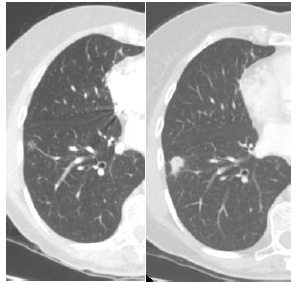
A Prescrever esquema RHZE.
B Prescrever anfotericina.
C Solicitar lavado broncoalveolar.
D Solicitar biópsia pulmonar.
Questão 25 · Estadiamento anatômico · Estadiamento · 4000131037Na avaliação do mediastino em pacientes com câncer de pulmão, é correto dizer que:
A A taxa de resultados falso-negativos da mediastinoscopia está em torno de 20%.
B A taxa de resultados falso-negativos do PET scan está em torno de 5%.
C O valor preditivo negativo da tomografia de tórax é de 49%.
D Um paciente com tomografia sem linfonodomegalias e com um PET scan negativo não pode ser operado sem mediastinoscopia.
Questão 26 · Introdução · 4000129678O tumor pulmonar benigno mais frequente é o:
A hamartoma.
B lipoma.
C fibroma.
D leiomioma.
Questão 27 · Câncer de Pulmão · 4000129355Homem de 60 anos, em boas condições clínicas e sem comorbidades significativas, tabagista, com carga tabágica de 60 maços-ano, traz uma tomogra a computadorizada de tórax com uma lesão nodular sólida isolada de 10 cm de diâmetro, no lobo superior esquerdo, não calci cada, com bordos espiculados, com alta probabilidade radiológica (>60%) de neoplasia maligna. A PET-CT (Tomogra a Computadorizada por Emissão de Pósitrons) mostrou captação significativa do radiofármaco sugerindo fortemente neoplasia maligna de pulmão. Frente a esta situação, seu próximo passo seria:
A Biópsia da lesão.
B Quimioterapia e Radioterapia.
C Imunoterapia oncológica.
D Repetir TC em 3 meses.
Questão 28 · Diagnóstico · Radiograf ia de tórax · Manejo do nódulo abordagem diagnóstica · 4000129206Paciente de 62 anos, tabagista, vinha apresentando episódios de hemoptise há 1 mês. Imagem da radiogra a de tórax anteroposterior está reproduzida abaixo. Que conduta, dentre as propostas, é a mais adequada?
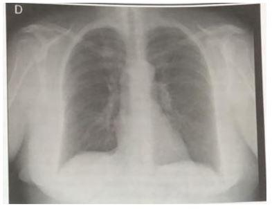
A Realizar drenagem do pneumotórax à esquerda.
B Solicitar tomografia computadorizada de tórax para melhor avaliação de opacidade nodular projetada sobre o lobo superior direito, devido à possibilidade de neoplasia.
C Solicitar ressonância magnética de tórax com gadolínio para melhor avaliação de massa paratraqueal à esquerda no mediastino.
D Solicitar ultrassonografia de tórax para melhor avaliação da cavidade pleural direita, devido à obstrução do seio costofrênico desse lado, que pode corresponder à presença de derrame pleural.
Questão 29 · Broncof ibroscopia com biópsia · Quadro clínico · Tipos histológicos · 4000128407Paciente, 56 anos, com história de dispneia e tosse há 6 meses. Procura médico pneumologista que, após exame sico, indicou broncoscopia por presença de sibilo localizado em HTD. A broncoscopia revelou tumoração de tom roxo em brônquio-fonte direito e foi realizada biópsia neste procedimento. Enquanto aguardava o resultado da biópsia em casa, o paciente apresentou episódios repetidos de diarreia aquose, hipotensão, vermelhidão no corpo e chiado generalizado com duração variável Baseado nestes achados, pode se supor que a tumoração trata-se de:
A Adenocarcinoma.
B Carcinoma epidermoide.
C Tumor carcinoide.
D Linfoma.
E Sarcoma.
Questão 30 · Síndrome de Pancoast · Síndrome de ClaudeBernardHorner · 4000130307Homem, 70a, procura Unidade de Pronto Atendimento com queixa de dor em pontada no peito à direita, há três meses, de intensidade progressiva, que exacerba com a respiração e com irradiação para região do ombro direito, cansaço aos grandes esforços, associados com náusea e fadiga. Antecedente Pessoal: tabagismo; 50 maços/ano. Exame físico: PA= 136x82 mmHg, FC= 88 bpm, FR= 20 irpm, oximetria de pulso (ar ambiente)= 92%; face: ptose à direita; pescoço: gânglios supraclaviculares e face anterior; pulmão: murmúrio vesicular globalmente diminuído; neurológico: Escala de Coma de Glasgow= 15 e pupilas anisocóricas, miótica à direita. Radiograma de toráx: O ACHADO NO EXAME FÍSICO ESPERADO NESSA SITUAÇÃO É:

A Enoftalmia a direita.
B Exoftalmia a esquerda.
C Enoftalmia a esquerda.
D Exoftalmia a direita.
Questão 31 · Tomograf ia de tórax · Radiograf ia de tórax · Radiológico · 4000128100Paciente, sexo masculino, 50 anos de idade, dá entrada no Pronto Socorro com a queixa de dispneia e tosse pouco produtiva há três meses, com piora, há três dias. Refere piora dos sintomas ao se deitar. Relata também cefaleia e náuseas. Refere tabagismo de 40 maços/ano. Ao exame físico, regular estado geral, pletora facial, estase de jugulares, Temperatura axilar: 36,5°C, FC: 78bpm, PA: 122x78mmHg, FR: 24imp; ausculta cardíaca sem alterações; ausculta respiratória com murmúrios vesiculares bem distribuídos com roncos e crépitos difusamente bilateral; abdome plano, ácido e indolor; edema dos membros superiores +2/ +4. Indique o exame mais adequado para completar a investigação diagnóstica.
A Ultrassonografia com doppler venoso dos membros superiores.
B Ecocardiografia transtorácica.
C Tomografia computadorizada de tórax.
D Radiografia de tórax.
Questão 32 · Derrame pericárdico · Quadro clínico · Manif estações clínicas · 4000128099Paciente, sexo masculino, 50 anos de idade, dá entrada no Pronto Socorro com a queixa de dispneia e tosse pouco produtiva há três meses, com piora, há três dias. Refere piora dos sintomas ao se deitar. Relata também cefaleia e náuseas. Refere tabagismo de 40 maços/ano. Ao exame físico, regular estado geral, pletora facial, estase de jugulares, Temperatura axilar: 36,5°C, FC: 78bpm, PA: 122x78mmHg, FR: 24imp; ausculta cardíaca sem alterações; ausculta respiratória com murmúrios vesiculares bem distribuídos com roncos e crépitos difusamente bilateral; abdome plano, ácido e indolor; edema dos menbros superiores +2/ +4. Indique a principal suspeita etiológica que gerou a condição clínica desse paciente.
A Trombose venosa profunda.
B Derrame pericárdico.
C Neoplasia de pulmão.
D Doença Pulmonar Obstrutiva Crônica.
Questão 33 · Manif estações clínicas · Síndrome de veia cava superior · Tamponamento cardíaco · 4000128098Paciente, sexo masculino, 50 anos de idade, dá entrada no Pronto Socorro com a queixa de dispneia e tosse pouco produtiva há três meses, com piora, há três dias. Refere piora dos sintomas ao se deitar. Relata também cefaleia e náuseas. Refere tabagismo de 40 maços/ano. Ao exame físico, regular estado geral, pletora facial, estase de jugulares, Temperatura axilar: 36,5°C, FC: 78bpm, PA: 122x78mmHg, FR: 24imp; ausculta cardíaca sem alterações; ausculta respiratória com murmúrios vesiculares bem distribuídos com roncos e crépitos difusamente bilateral; abdome plano, ácido e indolor; edema dos menbros superiores +2/ +4. Após o exame inicial, indique a principal suspeita diagnóstica que levou o paciente a procurar o Pronto Socorro.
A Tamponamento cardíaco.
B Síndrome da veia cava superior.
C Tromboembolismo pulmonar.
D Pneumonia com derrame pleural.
Questão 34 · Tratamento · Síndrome de veia cava superior · 4000127335Homem de 70 anos, tabagista 60 anos/maço com quadro de tosse e hemoptoicos há cerca de 3 meses associado a perda de peso de 5kg. Procura o pronto-socorro por apresentar dispneia e piora da tosse há cerca de 5 dias. Ao exame, evidenciado edema de pescoço à direita, frequência respiratória de 26 incursões por minuto, saturação de oxigênio de 89% em ar ambiente, ausculta pulmonar com redução do murmúrio vesicular em base direita, pressão arterial 160x100mmHg. Radiogra a de tórax evidenciando alargamento do mediastino superior e derrame pleural a direita. Frente ao provável diagnóstico de base, além da oferta de oxigênio suplementar, qual a melhor conduta inicial?
A Morfina e enalapril
B Metilprednisolona e codeína.
C Moxifloxacino e hidrocortisona.
D Furosemida e elevação da cabeceira.
Questão 35 · Pneumologia · Epidemiologia · 4000119514Segundo a Organização Mundial da Saúde (OMS) em seu relatório de 2018 a neoplasia maligna que mais mata no mundo é o câncer de:
A Pulmão.
B Mama.
C Pele não melanoma.
D Colorretal.
Questão 36 · Síndrome de veia cava superior · 4000114730Homem, 50 anos, com dispneia progressiva, edema e hiperemia facial há 10 dias. Refere tosse produtiva com estrias de sangue e perda ponderal. Nega febre. É tabagista, 60 maços/ano. Exame físico: REG, dispneia leve em repouso; PA = 100 x 60 mmHg; FC = 100 bpm; FR = 20 ipm; saturação de O₂=90% em ar ambiente. Pletora e edema de face e andar superior de tronco. Distensão de veias do pescoço. MV globalmente diminuído, com roncos difusos. Qual é o diagnóstico mais provável?
A Tromboembolismo pulmonar.
B Tamponamento pericárdico.
C Síndrome da veia cava superior.
D Pericardite constritiva.
Questão 37 · Broncof ibroscopia com biópsia · Metástases · Quimioterapia · 4000107186Com relação às neoplasias malignas de pulmão, podemos afirmar que:
A as metástases mais comumente acometem ossos e cérebro.
B a biópsia transbrônquica é o principal meio diagnóstico para tumores periféricos.
C o tratamento padrão para os casos com estádios I e II é a quimioterapia com cisplatina.
D a cintilografia óssea é fundamental na diferenciação entre metástase e osteoartrose.
Questão 38 · Síndrome de veia cava superior · 4000103404Homem de 71 anos, tabagista há 52 anos, procurou atendimento médico queixando-se de tosse, hemoptise, di culdade respiratória e perda de peso há 3 meses. O RX de tórax detectou massa de 4 cm de diâmetro em ápice direito. O paciente apresentou edema em face, braços e ombros; esses sintomas são agravados quando o paciente se encontra na posição horizontal ou encurvado. O quadro descrito é compatível com qual dos diagnósticos abaixo relacionados?
A Timoma no mediastino anterior e miastenia gravis.
B Adenocarcinoma pulmonar e síndrome de Horner.
C Tumor de Pancoast e síndrome da veia cava superior.
D Bócio mergulhante de tireoide e compressão do plexo braquial.
Questão 39 · Tratamento do câncer não pequenas células · Tratamento · Estadiamento anatômico · 4000103198Em relação ao câncer de pulmão, é correto afirmar que:
A Neoplasia de pulmão tipo não pequenas células é um tipo de neoplasia de origem neuroendócrina, de instalação agressiva.
B O estadiamento de neoplasia de pulmão tipo não pequenas células divide-se em doença limitada, cujo tratamento é composto de quimioterapia e radioterapia, e doença extensa, cujo tratamento é a quimioterapia isolada.
C O estadiamento de neoplasia de pulmão tipo pequenas células se divide em doença limitada, cujo tratamento é composto de quimioterapia e radioterapia, e doença extensa, cujo tratamento é a quimioterapia isolada.
D A escolha do tratamento de neoplasia de pulmão tipo pequenas células depende da presença ou não de mutações no tumor (“drive mutations”). ida oib pr ed
Questão 40 · Síndrome Miastênica de Lambert Eaton · Síndrome miastênica de EatonLambert · Neurologia · 4000095254Qual dos cânceres abaixo está mais relacionado à doença da junção neuromuscular síndrome de Lambert-Eaton?
A CA de tireoide.
B Linfoma.
C Mieloma múltiplo
D CA de pulmão.
Questão 41 · Fatores de risco · Quadro clínico · Tipos histológicos · 4000092826Identifique abaixo as afirmativas verdadeiras ( V ) e as falsas ( F ) em relação ao câncer de pulmão. ( ) Observa-se nos últimos anos aumento na prevalência dos adenocarcinomas. ( ) A maioria dos tumores de pulmão apresenta-se em estágios iniciais ao diagnóstico. ( ) Os carcinomas de pequenas células são os que mais determinam acometimento pleural. ( ) Os carcinomas de pequenas células possuem tempo de duplicação curto. ( ) O tabagismo é o principal fator de risco para o desenvolvimento das neoplasias pulmonares. Assinale a alternativa que indica a sequência correta, de cima para baixo.
A V • V • F • F • V
B V • F • V • V • F
C V • F • F • V • V
D F • V • F • F • V
E F • F • V • V • F
Questão 42 · Diagnósticos Dif erenciais · Indicações de marcapasso def initivo · Apresentação Clínica · 4000082413Paciente de 43 anos, que, há 4 anos, recebeu marca-passo por arritmia grave, apresenta falta de ar, edema facial e edema do membro superior direito, sem dor torácica. Nesse caso, o diagnóstico mais provável é
A síndrome da veia cava superior.
B trombose venosa da jugular.
C insuficiência cardíaca congestiva.
D tromboembolismo pulmonar.
Questão 43 · Fatores de risco · Rastreio populacional · 4000082264Paciente, 60 anos, sexo masculino, foi a consulta de forma não voluntária por insistência de sua esposa. Nega quaisquer sintomas no momento. Refere hábitos de tabagismo (35 maços - ano) e etilismo (600 ml de bebida fermentada/dia). Diante desse quadro, para o rastreamento do câncer de pulmão, a conduta adequada é solicitar
A tomografia de tórax com baixa dosagem de radiação.
B telerradiografia de tórax e pesquisa de células neoplásicas no escarro.
C broncoscopia com biópsia diagnóstica.
D tomografia com emissão de pósitrons.
Questão 44 · Estadiamento anatômico · Pneumologia · Choque séptico · 4000023763Uma paciente de 73 anos de idade, residente na cidade do Rio de Janeiro-RJ, é diabética e hipertensa. Negou história de tabagismo ativo ou passivo. Procurou atendimento de emergência por dispneia, tosse produtiva, febre de 39°C e dor torácica ventilatório-dependente. Ao exame físico, apresentava-se em regular estado geral, alerta, PA = 80 mmHg X 50 mmHg, FC = 115 bpm, SatO2 = 91% em ar ambiente, FR = 26 irpm; ausculta respiratória com crepitantes pulmonares à direita. Exames complementares: Hb = 13,3g/dL, Ht = 39%, leucócitos = 19.000/mm3 e 15% de bastões, 177 mil plaquetas, ureia = 108mg/dL, Cr = 1,6mg/dL, raio X de tórax com consolidação em lobo inferior direito. Quanto ao caso clínico apresentado e tendo em vista os conhecimentos médicos correlatos, julgue o item a seguir. Um paciente com neoplasia de pulmão e tumor de tamanho de 7,5 cm possui estádio clínico II.
A Certo.
B Errado.
Questão 45 · Pneumologia · Choque séptico · Adenocarcinoma · 4000023739Uma paciente de 73 anos de idade, residente na cidade do Rio de Janeiro-RJ, é diabética e hipertensa. Negou história de tabagismo ativo ou passivo. Procurou atendimento de emergência por dispneia, tosse produtiva, febre de 39°C e dor torácica ventilatório-dependente. Ao exame físico, apresentava-se em regular estado geral, alerta, PA = 80 mmHg X 50 mmHg, FC = 115 bpm, SatO2 = 91% em ar ambiente, FR = 26 irpm; ausculta respiratória com crepitantes pulmonares à direita. Exames complementares: Hb = 13,3g/dL, Ht = 39%, leucócitos = 19.000/mm3 e 15% de bastões, 177 mil plaquetas, ureia = 108mg/dL, Cr = 1,6mg/dL, raio X de tórax com consolidação em lobo inferior direito. Quanto ao caso clínico apresentado e tendo em vista os conhecimentos médicos correlatos, julgue o item a seguir. Em caso de diagnóstico de neoplasia de pulmão para essa paciente, adenocarcinoma deve ser o tipo histológico encontrado.
A Certo.
B Errado.
Questão 46 · Síndrome de veia cava superior · 4000121441Um paciente de 67 anos de idade, com antecedente de tabagismo, hipertensão e diabetes, refere que, há três semanas, vem notando o rosto inchado e vermelho ao se levantar pela manhã. Hoje cedo, foi auxiliar sua lha a carregar um pacote pesado e descreveu uma sensação de “quase desmaio”, que o motivou a procurar o prontosocorro. No exame físico, apresentava PA de 140 x 80 mmHg, FC de 74 bpm, FR de 21, Sat. de 92%, ingurgitamento venoso cervical e edemacraniofacial, além de edema discreto em MMSS. Não havia edema em MMII. Ausculta cardiopulmonar e exame abdominal sem alterações. O ECG mostrou ritmo sinusal e FC de 74, sem alterações patológicas do traçado. Nesse caso hipotético, o diagnóstico provável é de
A tromboembolismo pulmonar.
B síncope cardiogênica.
C síndrome da veia cava superior.
D insuficiência cardíaca.
E insuficiência renal aguda.
Questão 47 · Síndrome de Horner · Síndrome de Horner · Síndrome de ClaudeBernardHorner · 4000096806Adaptada Homem, 66a, com dor no ombro direito, fraqueza e dormência no membro superior direito há 2 meses. Exame físico: neurológico: leve ptose palpebral à direita e miose ipsilateral. O QUADRO CLÍNICO PODE SER EXPLICADO POR:
A Neoplasia de pequenas células de pulmão.
B Tumor neuroendócrino bem diferenciado de pulmão.
C Neoplasia não pequenas células de pulmão.
D Adenocarcinoma de pulmão.
Questão 48 · Broncof ibroscopia com biópsia · Quadro clínico · Pneumologia · 4000085826Paciente de 62 anos veio à consulta queixando-se de tosse e dispneia progressiva, quadro iniciado há 6 meses. A radiografia do tórax está reproduzida abaixo. Com base nesses dados, assinale a assertiva incorreta.
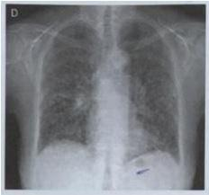
A A exposição crônica a aves pode explicar os sintomas e os achados radiológicos.
B As alterações pulmonares visíveis geralmente causam distúrbio ventilatório restritivo à espirometria.
C A realização de tomografia computadorizada está indicada para melhor caracterização das alterações pulmonares.
D Biópsia pulmonar, se indicada, deve ser preferencialmente realizada por via fibrobroncoscópica.
E Na ausência de etiologia definida, a hipótese de fibrose pulmonar idiopática deve ser considerada.
Questão 49 · Broncof ibroscopia com biópsia · Quadro clínico · Pneumologia · 4000080853Paciente de 69 anos, com diagnóstico de carcinoma de células escamosas, apresenta na tomogra a de tórax massa tumoral de 5 cm de diâmetro, situada em brônquio central esquerdo e distando 4 cm da carina. Sobre esse caso, assinale a alternativa INCORRETA:
A A fibrobroncoscopia, nesse caso, tem indicação tanto para diagnóstico do tumor quanto para estadiamento.
B Se o paciente realizar um PET-scan e este mostrar ausência de lesões com hipercaptação de glicose, o tratamento indicado será o cirúrgico, com melhor prognóstico.
C Caso o paciente apresente linfonodo supraclavicular palpável à esquerda, este deve ser acessado para pesquisa de acometimento neoplásico, pois sua presença torna o tumor potencialmente inoperável.
D Habitualmente, todas as metástases do câncer de pulmão são sintomáticas, o que geralmente torna a história clínica e o exame físico grandes marcadores da disseminação da doença.
Questão 50 · Síndrome de Horner · Síndrome de ClaudeBernardHorner · 4000080757Um paciente do sexo masculino com 60 anos de idade, chega ao ambulatório queixando-se de emagrecimento. Ao exame físico, o médico identi ca que ele apresenta um quadro compatível com a síndrome de Horner que é característica dos tumores na seguinte localização:
A Base do pulmão direito.
B Ápice pulmonar.
C Lobo médio.
D Pleura.
Revisar: possível letra faltando em enunciado
Questão 51 · Rastreio populacional · 4000079493Paciente, 60 anos, sexo masculino, vai a consulta, de forma não voluntária, por insistência de sua esposa. Nega quaisquer sintomas no momento. Refere hábitos de tabagismo (35 maços-ano) e etilismo (600 ml de bebida fermentada/dia). Como rastreio para câncer de pulmão, o médico deveria solicitar
A PET-Scan a cada 2 anos.
B tomografia de tórax com contraste a cada 2 anos.
C tomografia de tórax com baixa dosagem de radiação a cada ano.
D radiografia de tórax e citologia oncótica do escarro a cada ano.
Questão 52 · Tratamento · Quadro clínico · Síndrome de veia cava superior · 4000067249Homem, 63 anos de idade, com diagnóstico de neoplasia de pulmão, fora de proposta curativa, em quimioterapia paliativa, no pronto-socorro, com dispneia, em piora progressiva há 2 semanas. Ao exame: hipocorado, hidratado, acianótico, anictérico, afebril. Pressão arterial: 138 x 92 mmHg; frequência cardíaca: 110 batimentos/minuto, frequência respiratória: 28 incursões/minuto, saturação de O₂ em ar ambiente = 92%¨. Nota-se edema de face e rouquidão. Aparelho cardiovascular: estase jugular bilateral, ritmo cardíaco regular, com bulhas normofonéticas, sem sopros. Aparelho respiratório: murmúrios vesiculares audíveis difusamente, sem ruídos adventícios. Abdome e membros inferiores sem alterações. A medida terapêutica indicada neste caso é:
A Trombólise
B Radioterapia
C Traqueostomia
D Pericardiocentese
Questão 53 · Síndrome de Cushing · Síndrome miastênica de EatonLambert · Quadro clínico · 4000061104A neoplasia do pulmão é a principal causa de mortalidade por câncer nos homens e a segunda nas mulheres no Brasil. Frequentemente apresenta manifestações clínicas a distância não relacionadas a metástases. Assinale a alternativa que NÃO apresenta uma manifestação paraneoplásica do câncer de pulmão.
A Síndrome de Horner.
B Hiponatremia.
C Encefalite límbica.
D Osteoartropatia hipertrófica.
Questão 54 · Câncer de pulmão não pequenas células · Tipos histológicos · 4000054762Câncer de pulmão pequenas células oat cell Assinale o tipo histológico mais prevalente em pacientes portadores de neoplasia pulmonar maligna não expostos ao tabagismo:
A Carcinoma broncoalveolar
B Adenocarcinoma
C Carcinoma de células escamosas
D Carcinoma adenóide cístico
Questão 55 · Metástases · Cirurgia · 4000037229Sobre os Tumores Metastáticos do Pulmão, assinale a INCORRETA.
A A pior sobrevida é obtida nos pacientes portadores de metástase de carcinomas coloretais.
B São os principais sítios de metástases dos tumores sólidos.
C Radiologicamente estas lesões se apresentam como nódulos múltiplos e bem delimitados.
D A melhor sobrevida é obtida nos pacientes portadores de metástases de células germinativas.
Questão 56 · Tratamento · Cuidados paliativos · Cuidados paliativos em pneumologia · 4000036884Homem, 78 anos, hipertenso e diabético, é diagnosticado com câncer de pulmão estádio II, estando em programação de tratamento oncológico. Durante a anamnese, a equipe de oncologia investiga a capacidade funcional do paciente. Ele se diz cansado, apresentando di culdade de fazer as compras semanalmente, como costumava. Já aposentado, mantém suas atividades em casa, como cozinhar, arrumar o quarto e organizar suas nanças, mas não consegue mais cuidar do jardim. Com medo das quedas, instalou barras de proteção no banheiro, e agora se sente mais seguro na hora do banho. Sua lha relatou preocupação e intenção de, em breve, levar o pai parar morar com ela. Considerando esse caso, assinale a alternativa correta quanto à classificação da Eastern Cooperative Oncology Group (ECOG) e ao prognóstico ante o tratamento adequado.
A ECOG 1 - Prognóstico ruim.
B ECOG 2 - Bom prognóstico.
C ECOG 3 - Prognóstico ruim.
D ECOG 4 - Bom prognóstico.
E ECOG 4 - Prognóstico ruim.
Questão 57 · Síndrome Miastênica de Lambert Eaton · Síndrome miastênica de EatonLambert · Pneumologia · 4000029613Sobre o Câncer de pulmão e as Síndromes paraneoplásicas, a histologia mais relacionada à síndrome miastênica de Eaton- Lambert é o
A carcinoma broncogênico.
B carcinoma espinocelular.
C adenocarcinoma.
D linfoma pulmonar.
E carcinoma de pequenas células.
Questão 58 · Quadro clínico · Tipos histológicos · Síndrome de veia cava superior · 4000020935Um paciente de 58 anos, tabagista, procura atendimento por quadro de tosse, hemoptise e perda de peso há 2 meses. Ao exame físico, identi ca-se circulação colateral em membro superior direito, discreto edema de face e de membro superior direito. Nota- se também, discreta turgência jugular. Qual padrão histológico de neoplasia pulmonar é mais envolvido com a síndrome paraneoplásica citada?
A carcinoma epidermoide
B carcinoma bronquíolo-alveolar
C carcinoma de grandes células
D carcinoma de pequenas células
E adenocarcinoma
Revisar: possível letra faltando em enunciado
Questão 59 · Síndrome de veia cava superior · 4000018151Um paciente de 67 anos de idade, com antecedente de tabagismo, hipertensão e diabetes, refere que, há três semanas, vem notando o rosto inchado e vermelho ao se levantar pela manhã. Hoje cedo, foi auxiliar sua lha a carregar um pacote pesado e descreveu uma sensação de quase desmaio, que o motivou a procurar o pronto-socorro. No exame físico, apresentava PA de 140 x 80 mmHg, FC de 74 bpm, FR de 21, SatO₂ de 92%, ingurgitamento venoso cervical e edema craniofacial, além de edema discreto em MMSS. Não havia edema em MMII. Ausculta cardiopulmonar e exame abdominal sem alterações. O ECG mostrou ritmo sinusal e FC de 74, sem alterações patológicas do traçado. Nesse caso hipotético, o DIAGNÓSTICO PROVÁVEL é
A Síncope cardiogênica;
B Síndrome da veia cava superior;
C Insuficiência cardíaca;
D Insuficiência renal aguda;
Questão 60 · Síndrome de veia cava superior · 4000011159Um paciente adulto jovem, com quadro de linfoma maligno, com massa mediastinal superior, apresenta edema de face e do pescoço, dispneia e tosse, com queixa de rouquidão e cefaleia. A equipe de oncologia admitiu o quadro como síndrome da veia cava superior. Então foram ministrados diuréticos, com dieta hipossódica, e oxigenoterapia com alívio temporário dos sintomas. Em relação a esse caso clínico, quanto à opção de terapêutica para recidiva da síndrome de veia cava superior, assinale a alternativa correta.
A Radioterapia com tumerectomia descompressiva.
B Stent intravascular autoexpansível.
C Uso contínuo de corticoide e antibióticos.
D Soroterapia em bolus, para aumentar o volume intravascular.
E Realização de um shunt venoso para descomprimir.
Questão 61 · Hipocortisolismo · Câncer de Pulmão · 4000010591Um paciente de 50 anos de idade vai ao médico queixando-se de fadiga e perda de peso de 5 kg nos últimos 30 dias. Foi tabagista por 30 anos, é sedentário e tem obesidade centrípeta. Os respectivos níveis pressóricos evidenciam 80 mmHg x 50 mmHg; além disso, o paciente apresenta FC = 80 bpm, ECG normal, hiperpigmentação cutânea e mucosas coradas e hidratadas. Há presença de baqueteamento digital em mãos e pés. Sem edema de membros inferiores ou palpebrais. Resultado dos exames laboratoriais: NA = 110 mEq\L (VR = 135 mEq\L a 145 mEq\L), K = 6,7 mEq\L (VR = 3,5 mEq\L a 4,5 mEq\L), ureia e creatinina normais e gasometria arterial com nível de bicarbonato reduzido (acidose metabólica). Os raios X de tórax apresentam nódulo pulmonar espiculado de 3 cm e US de abdome: múltiplos nódulos hepáticos com lesão vegetante em suprarrenais bilaterais. Com relação a esse caso clínico, assinale a alternativa que indica o provável diagnóstico dessa paciente.
A Síndrome de secreção inapropriada de hormônio antidiurético.
B Hipotireoidismo - tireoidite de Hashimoto.
C Insuficiência de suprarrenal secundária a câncer de pulmão metastático.
D Insuficiência renal secundária a síndrome nefrítica.
E Macroadenoma hipofisário.
Questão 65 · Rastreio Câncer Colorretal · Rastreio populacional · Rastreamento do Câncer de Próstata · 4000130127Homem, 62a, com história de tabagismo (40 maços/ano) procura atendimento médico buscando realizar exames que permitam diagnóstico precoce e possibilitem a redução da mortalidade específica por câncer. Os exames a serem realizados periodicamente são:
A Colonoscopia, endoscopia digestiva alta e radiografia de tórax PA e perfil.
B Sangue oculto nas fezes, dosagem de PSA e tomografia computadorizada de tórax de baixa dosagem.
C Colonoscopia, dosagem de PSA e radiografia de tórax PA e perfil.
D Retossigmoidoscopia, endoscopia digestiva alta, tomografia computadorizada de tórax de baixa dosagem.
Questão 66 · Padrão de calcif icação · Manejo do nódulo abordagem diagnóstica · Pneumologia · 4000107770Homem, 55 anos de idade, tabagista (mais de 20 cigarros ao dia) fez radiogra a de tórax de rotina na empresa em que trabalha. Foi identi cado nódulo solitário periférico de 2,8 cm localizado em lobo superior do pulmão direito. A tomogra a de tórax, com janela pulmonar (A) e mediastinal (B) é mostrada a seguir. A melhor conduta nesse caso é
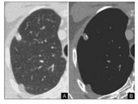
A broncoscopia e biópsia transbrônquica.
B videotoracoscopia e biópsia da lesão.
C acompanhamento ambulatorial, pois o nódulo é inferior a 3,0 cm.
D toracotomia e biópsia da lesão.
E toracotomia e lobectomia superior direita com esvaziamento ganglionar.
Revisar: possível letra faltando em enunciado
Questão 67 · Síndrome de ClaudeBernardHorner · 4000105934Homem, 62 anos, tabagista (50 anos/maço), há 8 meses, apresenta dor em ombro direito e hemitórax direito. Houve melhora parcial da dor com uso de anti-inflamatório não esteroidal. Apresenta ptose palpebral direita e tosse seca há um mês. Ao exame físico do sistema respiratório: frêmito toracovocal normal e simétrico, som claro pulmonar simétrico, macicez à percussão da clavícula direita e murmúrio vesicular siológico bilateralmente. Qual outra manifestação clínica é mais provável de ser observada nesse paciente?
A Desvio de rima à esquerda.
B Cefaleia holocraniana.
C Anidrose em hemiface ipsilateral.
D Midríase ipsilateral.
Questão 68 · Metástases · Pneumologia · 4000103760Paciente apresenta dois nódulos pulmonares, um deles medindo 3 cm justa pleural e outro 2 cm intraparenquimatoso em lobo esquerdo pulmonar, sugestivos de doença sarcomatosa metástica. Há seis meses, foi realizada ressecção de sarcoma de alto grau em membro inferior esquerdo com preservação do membro. Os exames complementares não evidenciaram doença extrapulmonar. Nesse caso, está indicada a realização de:
A radioterapia
B quimioterapia
C lobectomia esquerda
D embolização com yttrium
Questão 69 · Fatores de risco · Síndrome da secreção inapropriada do HAD · 4000100972Um homem de 68 anos de idade com carcinoma de pulmão de pequenas células é admitido no hospital por confusão mental e sonolência. Ao exame clínico, hidratado, afebril, descorado +/4+, anictérico, taquipneico e com peso 60 kg. A concentração sérica de sódio é de 110 mEq/L, a concentração sérica de potássio é de 4 mEq/L, a osmolaridade é de 220 mOsm/kg, a concentração sérica de creatinina é de 0,8 mg/dl, a concentração de ureia é de 49 mg/dl e a osmolaridade urinária é de 600 mOsm/kg. A provável causa da hiponatremia é:
A Uso de diuréticos.
B Insuficiência adrenal.
C Síndrome da secreção inapropriada de hormônio antidiurético.
D Síndrome nefrótica.
Questão 70 · Tratamento do câncer não pequenas células · Tratamento cirúrgico · Síndrome de veia cava superior · 4000098962Em pacientes com neoplasia pulmonar, todas abaixo são contra indicações à cirurgia, exceto:
A Síndrome da veia cava superior
B Derrame pleural
C Disfagia e/ou rouquidão
D VEF1 < 35% previsto
Questão 71 · Sinais de alarme · Tosse · Síndrome de veia cava superior · 4000088676Geraldo, 60 anos, tabagista há 50 anos, chega à consulta no posto de saúde relatando tosse seca há 6 meses, rouquidão há 30 dias e agora sua face e braços estão vermelhos e edemaciados. A principal hipótese diagnóstica e a respectiva conduta são:
A Neoplasia de pulmão; tomografia de tórax
B Doença do refluxo gastroesofágico; pHmetria
C Doença pulmonar obstrutiva crônica; prova de função pulmonar
D Tosse alérgica; testes alérgicos com dosagem de IgE
E Neoplasia de laringe; laringoscopia
Questão 72 · Anatomopatológico · Fatores de risco · Estadiamento anatômico · 4000085513Em relação ao diagnóstico de neoplasia pulmonar, está correto afirmar que
A a citopatologia de escarro é a medida inicial em pacientes de alto risco para neoplasia.
B a maioria das neoplasias pulmonares são diagnoticadas em estágios precoces e passíveis de tratamento curativo.
C tabagistas com carga tabágica superior a 20 maços/ano devem fazer radiograma de tórax anual para rastreamento de neoplasia.
D a tomografia de tórax de baixa dosagem é método indicado para rastreamento em pacientes de alto risco, tendo demonstrado beneficios em redução de mortalidade.
E a PET/CT é o método mais sensível e específico para rastreamento de neoplasia pulmonar, sendo considerado o padrão ouro para rastreamento de pacientes de alto risco. ida oib pr ed
Questão 73 · Diagnóstico · 4000078494Homem, 50 anos, ex-tabagista, com tosse seca há dois meses associada à dispneia aos grandes esforços. Exame físico: eupneico; MV abolido em base esquerda. RX de tórax; massa pulmonar em lobo superior esquerdo; derrame pleural em 1/3 inferior esquerdo. A principal hipótese diagnóstica é de câncer de pulmão. A intervenção melhor indicada, neste momento, para confirmação diagnóstica, é:
A Tomografia computadorizada de tórax.
B Ressonância magnética de tórax.
C Punção transtorácica da massa pulmonar.
D Toracocentese para análise do líquido pleural.
Questão 74 · Quadro clínico · 4000077955Mulher, 72 anos, tabagista, 35 maços/ano, relata emagrecimento nos últimos seis meses, além de tosse e, mais recentemente, febre baixa. De acordo com a história da paciente e com as imagens abaixo, a hipótese diagnóstica mais provável da lesão encontrada no lobo inferior do pulmão direito é:
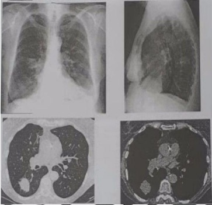
A Derrame intercisural, pois apresenta aspecto fusiforme em projeção de cissura oblíqua.
B Tuberculose, pois apresenta contornos irregulares e localização típica.
C Tumor maligno devido aos contornos espiculados e pulmões hiperaerados.
D Pneumonia redonda, por ter contornos irregulares e broncograma aéreo.
Questão 75 · Síndrome de Horner · Tumor de Pancoast · Síndrome de ClaudeBernardHorner · 4000060579Homem de 60 anos de idade, tabagista pesado, iniciou quadro de dor torácica irradiada para o membro superior direito. A telerradiogra a de tórax evidenciou a presença de grande tumoração no ápice pulmonar ipsilateral. São alterações clínicas associadas ao quadro, EXCETO:
A Ptose palpebral à direita
B Miose à direita
C Anidrose facial à direita
D Exoftalmia à direita
E Câncer de pulmão não pequenas células
Questão 76 · Fatores de risco · Síndrome da secreção inapropriada do HAD · 4000055327Um homem de 55 anos, previamente saudável, apresenta-se com confusão mental iniciada dois dias antes. Tem história de hipertensão arterial, artrite gotosa, hipotireoidismo e tabagismo de 20 maços/ano. Usa Alisquireno 150mg/dia e tiroxina 100mcg/dia. Os exames laboratoriais no sangue incluem: sódio- 122mE/l, potássio- 4,0mEq/l, cloro- de 90mEq/l, bicarbonato- 23 mEq/l, creatinina- 1,2mg/dl, glicose- 130mg/dl e TSH normal. Sua pressão arterial é 130 x 80 mmHg sem hipotensão postural. Sua urina encontra-se concentrada com sódio urinário de 60mE/l. O paciente não tem edema. O dado da história relevante que pode auxiliar na elaboração do diagnóstico desse paciente, é a/o:
A Artrite gotosa
B Uso de Alisquireno
C Hipertensão arterial
D Hipotireoidismo
E Tabagismo
Questão 77 · Fatores de risco · Síndrome da secreção inapropriada do HAD · 4000039615L.N.S., 72 anos, trazido por familiares ao Pronto Atendimento com queixa de anorexia, emagrecimento e tosse há 4 meses. Tabagista há 50 anos. Ao exame físico: desorientado, hipocorado 1+/4+, dispneico, PA 110 × 70 mmHg, FC 104bpm, FR 28 irpm. À ausculta cardíaca: ritmo cardíaco regular e sopro sistólico 1+/6+, pancardíaco, e nos pulmões crepitações em hemitórax direito. Exames complementares: Hb: 11,5 g/dL; Ht 33%; Leucócitos: 11.800; plaquetas 335.000/mm3; VHS 80 mm; glicemia 98 mg/dL; creatinina 0,8 mg/dL; ureia 23 mg/dL; sódio 112 mEq/L; potássio 3,9 mEq/L; cloro 88 meq/L; Bicarbonato 24 mEq/L; ácido úrico 1,4 mg/dL; sódio urinário 92 mEq/L e creatinina urinária 84 mg/dL. EAS com densidade de 1028 e traços de proteínas. TSH e T4 livre normais. A causa da hiponatremia deste paciente é:
A Intoxicação hídrica.
B Hipotireoidismo.
C Síndrome de secreção inapropriada do hormônio antidiurético.
D Diabetes insipidus.
Questão 78 · Achados sugestivos de benignidade · Padrão de calcif icação · Pneumologia · 4000029408Ao avaliar um nódulo pulmonar solitário à tomogra a de tórax, QUAL das características abaixo é considerada sugestiva de benignidade?
A Tamanho de 10mm
B Contornos espiculados
C Localização em lobos superiores
D Calcificação em pipoca
E Nódulo subsólido (ou em vidro fosco) com componente sólido
Questão 79 · Tipos histológicos · Pneumologia · 4000023769Com relação às neoplasias, o tumor pulmonar benigno mais comum é o
A adenoma.
B fibroma
C teratoma.
D hamartoma.
Questão 80 · Quadro clínico · Secreção Inapropriada de Hormônio Antidiurético SIADH · Pneumologia · 4000021768Paciente IDM, sexo masculino, 55 anos, ex-tabagista, com história de tosse, dispnéia e hemoptoicos há cerca de 3 meses. Foi investigado quanto a possibilidade de tuberculose pulmonar, porém o resultado foi negativo. Há 1 semana evoluiu com náuseas, vômitos, perda ponderal, irritabilidade, confusão mental e convulsões. Foi internado para investigação. Exames laboratoriais de entrada revelaram anemia e hiponatremia. Foi diagnosticado com câncer de pulmão avançado e foi descartada a presença de metástase cerebral. Dentre as alternativas abaixo, assinale a síndrome paraneoplásica que é compatível com o quadro clínico desse paciente acima:
A Síndrome de Cushing.
B Síndrome miastênica de Lambert-Eaton.
C Síndrome de Trousseau.
D Síndrome da secreção inadequada do hormônio antidiurético (SIADH).
E Osteoartropatia hipertrófica.
Questão 81 · Tratamento · Métodos complementares · Quadro clínico · 4000009552Com base no caso a seguir, assinale a conduta a ser realizada. Um paciente portador de neoplasia pulmonar avançada apresenta-se hipotenso, bulhas hipofonéticas e estase jugular.
A Raios-x de tórax PA e P e toracocentese de alívio
B Ecocardiografia e punção de Marfan.
C Intubação orotraqueal.
D Raios-x de tórax PA e P e drenagem pleural bilateral.
E Tomografia computadorizada de tórax e pleurodese.
Questão 82 · Tipos histológicos · 4000007686De acordo com a Oitava Edição do Sistema de Estadiamento de Câncer de Pulmão (2015), assinale a alternativa CORRETA com relação aos tumores tipo T3.
A Tumores entre 1 e 2 cm.
B Tumores entre 2 e 3 cm.
C Tumores entre 5 e 7 cm.
D Tumores entre 3 e 5 cm.
Questão 83 · Achados sugestivos de benignidade · Manejo do nódulo abordagem diagnóstica · Introdução · 4000004787Paciente, 65 anos de idade e tabagista 50 anos/maço, apresenta na tomogra a computadorizada (TC) de tórax nódulo no lobo superior direito de 8 mm de diâmetro, sem linfonodomegalia mediastinal. TC de crânio, ultrassonogra a de abdômen e cintilografia óssea normais. Não apresenta comorbidades. Entre as alternativas abaixo, qual a melhor conduta?
A Lobectomia com esvaziamento mediastinal.
B Quimioterapia e radioterapia.
C Acompanhamento periódico com TC de tórax.
D Lobectomia sem esvaziamento mediastinal.
E Segmentectomia.
Questão 84 · Tratamento · Pneumologia · Tratamento do câncer de pequenas células · 4000127603Uma mulher com 49 anos de idade é encaminhada para o ambulatório de oncologia, em razão de diagnóstico recente de adenocarcinoma de pulmão, com CA de pulmão não pequenas células em estágio IIIA (T3N1). A paciente nega qualquer história de tabagismo, cabendo ao médico fornecer-lhe, na consulta atual, informações sobre a sua doença e sobre o tratamento ao qual será submetida. Assinale a alternativa que apresenta informações adequadas sobre a doença ou sobre o tratamento a serem dadas pelo médico:
A A mudança recente da epidemiologia do câncer de pulmão revela que cerca de 50% dos casos ocorrem em pacientes que nunca fumaram.
B A inclusão de cisplatina no seu tratamento deverá produzir-lhe uma expectativa de sobrevida em 5 anos superior a 80%.
C O tipo histológico que seria mais esperado no seu caso seria o carcinoma espinocelular, em razão do seu sexo.
D O tratamento indicado para a paciente deve consistir em cirurgia e quimioterapia adjuvante.
Questão 85 · Tuberculose pulmonar secundária · Quadro clínico · Etiologia · 4000108676T.A.V, sexo masculino, 25 anos, chega no seu plantão no pronto socorro de cirurgia geral com queixas de escarros hemoptoicos há 2 semanas. Refere que nos últimos meses teve mais de 4 quadros de infecções pulmonares, tratadas corretamente. Nega etilismo e tabagismo. Apresenta-se em REG, PA: 110 x 70 mmHg, exame cardiovascular sem alterações. Antes mesmo de iniciar o exame do aparelho respiratório, já é possível pensar nos seguintes diagnósticos diferenciais, EXCETO:
A Tuberculose.
B Corpo estranho.
C Bronquiectasia.
D Carcinoma broncogênico.
E Carcinoide pulmonar.
Questão 86 · Fatores de risco · 4000090981Caracteriza a síndrome de secreção inapropriada de hormônio antidiuretico:
A Convulsão, hiponatremia,e osmolaridade urinária baixa.
B Confusão mental, hiperosmolaridade plasmática e oligúria.
C Letargia, hiponatremia e hiperosmoralidade urinária.
D Coma, hipernatremia, sódio urinário elevado.
E Coma, hipernatremia e Fe Na maior de 10%.
Questão 87 · Quadro clínico · Tipos histológicos · Síndrome de veia cava superior · 4000088226Paciente de 46 anos, previamente hígido, dá entrada no pronto- socorro com tontura, dispnéia, disfagia, edema de face, cianose e edema de membros superiores. Sinais vitais: FC 118, FR 36, PA 100x60. Qual o diagnóstico mais provável?
A Tromboembolismo pulmonar.
B Carcinoma de pequenas células de pulmão.
C Adenocarcinoma pulmonar.
D Tuberculose.
E Linfoma de Hodgkin.
Questão 88 · Fatores de risco · Tipos histológicos · 4000077681Qual das seguintes variedades de tumor de pulmão está MENOS relacionado ao tabagismo?
A Adenocarcinoma
B Carcinoma escamoso
C Carcinoma bronquíolo-alveolar
D Carcinoma de grandes células
Questão 89 · Carcinoma Espinocelular ou epidermoide CEC · Carcinoma de grandes células não neuroendócrino · 4000061524Metástases Na neoplasia de pulmão, a doença metastática extratorácica identi cada na necropsia tem como tipo mais comum o carcinoma:
A Epidermoide.
B De pequenas células.
C De células grandes.
D Indiferenciado.
E Espinocelular.
Questão 90 · Câncer de pulmão não pequenas células · Tratamento com terapia alvo · Adenocarcinoma · 4000061142Uma compreensão mais profunda da patobiologia do câncer de pulmão de células não pequenas (NSCLC) tem levado ao desenvolvimento de pequenas moléculas que têm como alvo as mutações genéticas conhecidas que desempenham papéis críticos na progressão e desenvolvimento da doença. Portanto, o teste para as mutações genéticas encontradas no câncer de pulmão e a adaptação à terapia em conformidade à elas, é amplamente aceito como uma prática oncológica padrão. Escolha a alternativa CORRETA considerando a mutação mais frequentemente encontrada no câncer de pulmão e seu tratamento correspondente.
A Mutação do receptor do fator de crescimento epidérmico (EGFR) e inibidor de tirosina quinase (erlotinibe).
B Mutação da quinase de linfoma anaplásico (ALK) e anticorpo anti-ALK.
C Mutação da via PIP3/ Akt/mTOR e inibidor de mTOR (everolimus).
D Mutação da quinase de linfoma anaplásico (ALK) e inibidor de tirosina quinase(erizotinibe).
E Mutação da via da MAPkinase/EPK quinase e anticorpo anti-MAPK.
Questão 91 · Câncer de pulmão não pequenas células · Anatomopatológico · Fatores de risco · 4000058567Mulher de 60 anos, do lar, branca, não tabagista. Apresentando tosse seca crônica há 4 meses, associado a perda de apetite e peso (6 kg). Exame físico normal. Radiogra a de tórax mostra massa (4 cm) periférica em lobo inferior do pulmão direito, subpleural. Submetida a biópsia percutânea, estagiamento , e posterior cirurgia com lobectomia inferior direita. O tumor mostrou positividade para o receptor de crescimento epitelial (EGFR). Permanece em acompanhamento ha 10 anos livre da doença. Com os dados apresentados qual o mais provável tipo celular da neoplasia maligna?
A Adenocarcinoma.
B Carcinoide brônquico.
C Carcinoma de grandes células.
D Carcinoma de pequenas células.
E Carcinoma epidermoide.
Questão 92 · Síndrome de veia cava superior · 4000050697Paciente masculino, 55 anos tabagista há 20 anos, relata ter iniciado há 45 dias tosse seca, rouquidão, perda de peso e inchação na porção superior do tórax e face. Ao exame físico, apresenta fácies pletórica, turgência de jugulares, edema de face, membros superiores e porção do tórax, além de circulação colateral próxima ao esterno. Abdômen e membros inferiores sem edema. Sobre esta condição clínica, assinale a afirmação errada:
A Pode ocorrer em pacientes portadores de cateteres venosos para hemodiálise e para quimioterapia.
B As causas mais comuns são neoplasia de pulmão e linfoma.
C Pode ter causas não malignas como tuberculose, histoplasmose, mediastinite, actinomocose, sífilis trauma e aneurisma de aorta, porem são etiologias bem raras.
D A compressão de veias cava inferior e supra hepáticas é a principal explicação fisiopatológica para este quadro clínico.
E São indicadores para o diagnóstico: tomografia do tórax com contraste, broncoscopia com biopsia de eventuais lesões, e biopsia de gânglios suspeitos, principalmente em mediastino.
Questão 93 · Semiologia · Quadro clínico · Pneumologia · 4000047069Você está de plantão na emergência de um pronto atendimento, quando recebe um paciente de 68 anos, tabagista e hipertenso, com presença de cianose nos lábios, leitos ungueias e orelhas. No exame físico, o paciente apresenta frequência cardíaca de 110 bpm, pressão arterial 124 x 78 mmHg, frequência respiratória 32 mrm, com uso de musculatura acessória, ausculta pulmonar com murmúrio abolido em base pulmonar a direita, com roncos no restante. Você nota também a presença de baqueteamento digital. Assinale a alternativa correta.
A A saturação do oxigênio arterial é normal nos casos de hipoventilação pulmonar e cianose.
B O baqueteamento digital pode estar associada à presença de câncer de pulmão.
C Entre as causas de cianose central, podemos citar o fenômeno de Raynaud.
D A causa do baqueteamento digital neste paciente é a hipoxemia aguda.
E A cianose periférica está associada com o baqueteamento digital.
Questão 94 · Síndrome de veia cava superior · 4000034674Os cânceres que com mais frequência causam síndrome de veia cava superior são os de:
A Mama e ovário.
B Próstata e bexiga.
C Colo de útero e colorretal.
D Pulmão e linfomas.
E Tireoide e boca
Questão 95 · Radiograf ia de tórax · Quadro clínico · Radiológico · 4000030811Paciente do sexo masculino, 58 anos, tabagista há 30 anos, apresenta perda de peso, dor torácica a esquerda, tosse persistente sem expectoração, sem febre, com evolução de três semanas. Avalie a radiogra a de tórax em PA abaixo e assinale o provável diagnóstico: (Conforme imagem do caderno de questões)
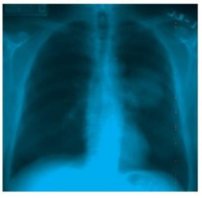
A Condensação inflamatória/infecciosa;
B Lesão nodular lobulada sugestiva de neoplasia;
C Aneurisma de aorta;
D Infarto pulmonar.
Questão 96 · Quadro clínico · Tipos histológicos · Radiológico · 4000026853Paciente 66 anos, tabagista 60 anos/maço, evoluindo nos últimos 3 meses com tosse e episódios hemoptóicos. Foi tratado empiricamente com antibiótico sem melhora. Realizada, então, tomogra a de tórax que evidenciou massa de 8 cm, cavitada, próxima ao mediastino, com invasão de brônquio direito. Qual a provável histopatologia da lesão?
A Oat-cell
B Epidermóide
C Adenocarcinoma
D Grandes células
Questão 97 · Fatores de risco · Tabagismo · Tipos histológicos · 4000019828Marque a afirmativa CORRETA sobre as neoplasias malignas do pulmão:
A Tem origem no fibroblasto do interstício pulmonar.
B Nao tem relação com asbesto ou metais pesados.
C Geralmente dão sintomas na fase inicial.
D Os tumores broncogênicos representam mais de 90% das neoplasias malignas do pulmão.
Questão 98 · Quadro clínico diagnóstico e sinais de alarme · Quadro clínico · Metástases · 4000019320Homem de 75 anos com lombalgia progressiva há 4 meses. A dor se localiza em região lombar baixa e é pior à noite, enquanto deitado, e melhora ao longo do dia com a mobilização. História pregressa de hipertensão arterial e tabagismo. Seu exame físico é normal, e a única alteração laboratorial é uma elevação de fosfatase alcalina total, com fração hepática diminuída. Radiogra a de coluna lombar sugere lesão lítica na terceira vértebra lombar. Das opções abaixo, qual o diagnóstico de base mais provável?
A Adenocarcinoma gástrico
B Neoplasia de pulmão não pequenas células
C Osteossarcoma
D Neoplasia de cabeça de pâncreas
E Carcinoma de tireoide
Questão 99 · Tratamento cirúrgico · 4000016313São critérios de não ressecabilidade na neoplasia de pulmão, exceto:
A Síndrome da veia cava superior.
B Derrame pericárdio com sinais de malignidade.
C Comprometimento dos grandes vasos.
D Reserva pulmonar insuficiente.
E Nódulo pulmonar ipsilateral a área a ser ressecada.
Questão 100 · Síndrome de veia cava superior · 4000113140Paciente do sexo masculino, 28 anos, refere, há 10 dias, tosse seca, dispneia aos moderados esforços, edema e rubor facial. Realizou rX de tórax, mostrado a seguir Qual a hipótese diagnóstica? Respostas: 1 12 23 34 45 56 67 78 89 100
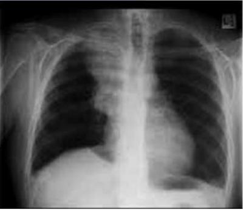
A Síndrome de veia cava superior.
B Tuberculose pulmonar.
C Sarcoidose.
D Corpo estranho.
E Pneumonia por micoplasma.